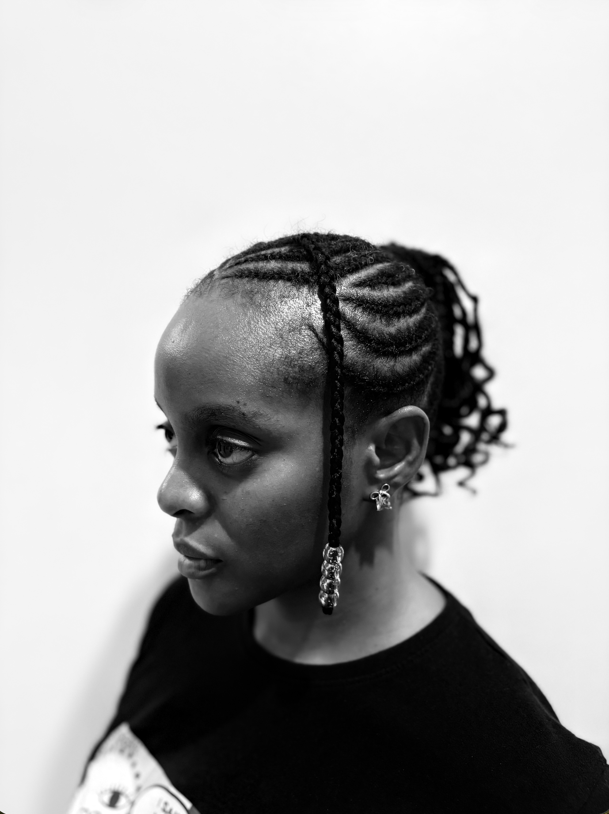

Isioma Tàlàbí
Who Am I?
Global Development Professional
I have spent over a decade in global development, with roles at Save the Children International, PwC/DFID and the Office of the Vice-President of Nigeria. My work centred on knowledge management, research and helping organisations use information well.
Cybersecurity Student
In 2026 I began a BSc in Cybersecurity at the Miva Open University, and I am now building the technical foundation to move into offensive security, working towards Security+, eJPT, PNPT and eventually OSCP.
Interest: Linux & Penetration Testing
Most of my learning happens hands-on. I run a Kali Linux lab for TryHackMe and HackTheBox Academy exercises, and I’ve worked through OverTheWire Bandit and network simulations in Cisco Packet Tracer.
Interest: IoT Devices & Embedded Electronics
As a Fellow in the MIVA Robotics Lab, I lead the IoT & Embedded Electronics chapter of the Robotics Club and work with Arduino and ESP32 on a low-cost smart monitoring and security system. I’m especially interested in where these areas meet: how connected devices and embedded systems can be tested and secured.

**Hover on titles for a color fiesta!